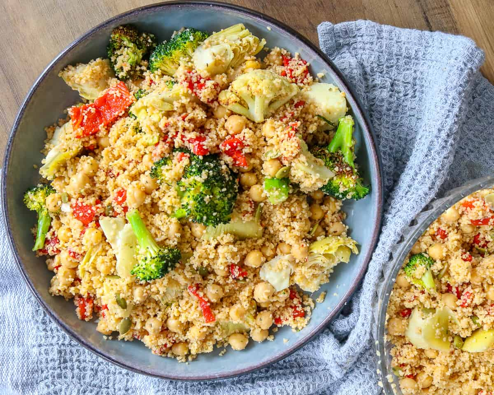

Couscous

Description
Couscous is a traditional North African dish that has become popular around the world.
It is made from tiny grains of semolina, which are steamed until they are fluffy and tender.
Couscous can be served as a side dish or used as a base for a variety of stews, vegetables, and meats.
It has a mild flavor and a light, fluffy texture that makes it a versatile addition to many different types of cuisine.
Couscous is also easy to prepare and can be cooked in just a few minutes, making it a convenient option for busy weeknights or last-minute dinner parties.
Ingredients
- Semolina wheat
- Water
- Spices
- Vegetables
- Meat or chicken
- Dried fruits and nuts
- Broth
Steps
- Bring the water or broth to a boil in a saucepan.
- In a separate bowl, mix the couscous with olive oil or butter and a pinch of salt and pepper.
- Pour the boiling water or broth over the couscous and stir to combine.
- Cover the bowl with a lid or plastic wrap, and let the couscous sit for about 10 minutes, or until it has absorbed all the liquid.
- Fluff the couscous with a fork to separate the grains.
- Serve the couscous as a side dish or use it as a base for stews, vegetables, or meats.